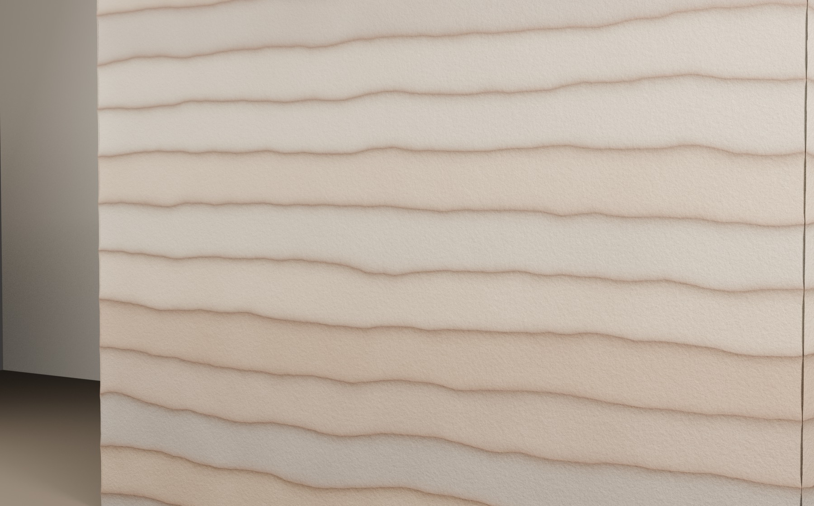
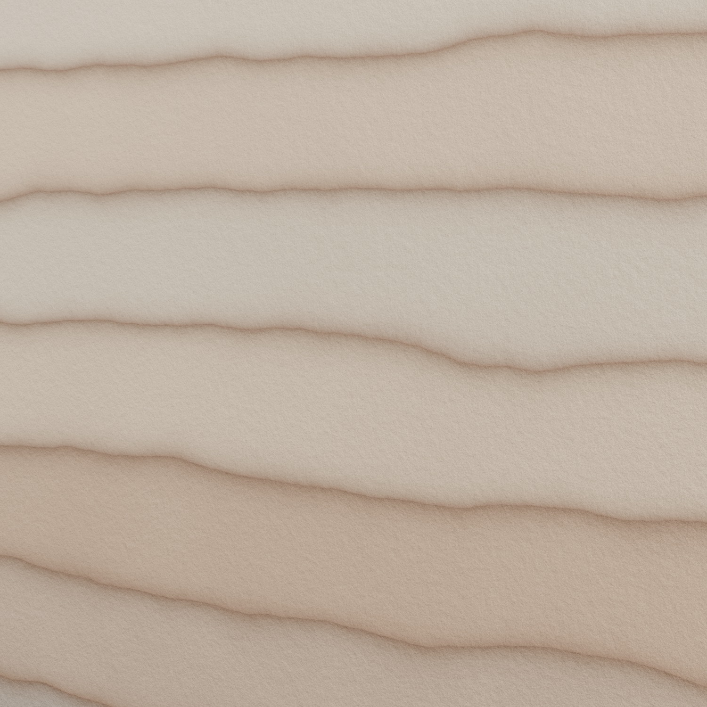
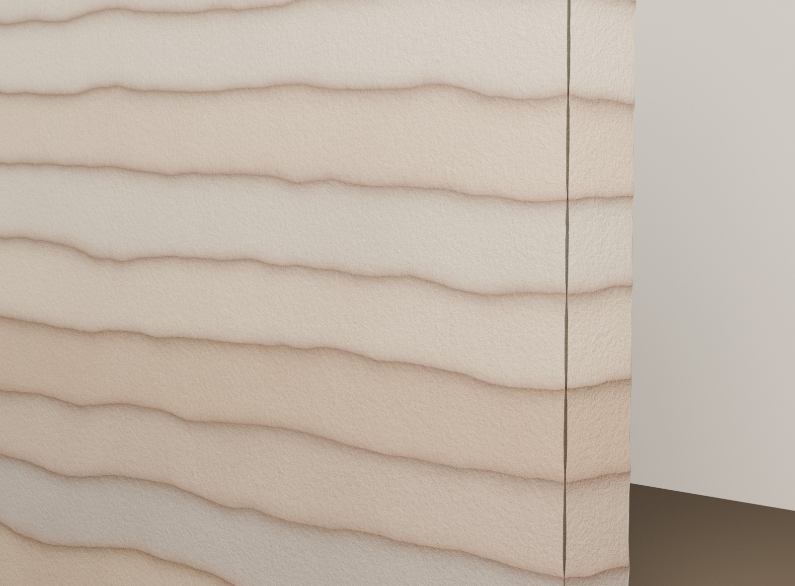

Rammed Earth Walls With Real Layer Logic
MYM Construction and Design by MyMultiPlatform is building a dedicated rammed-earth wall offer for feature walls, entry sequences, courtyards, and calm architectural interiors. The direction is simple: compacted earth lifts, sandy matte texture, custom mineral color bands, and wall studies that feel built instead of painted.
This page is positioned as a service lane for clients who want a distinctive wall system with tactile depth, thermal mass, and a one-of-a-kind material signature. The visuals below are in-house Blender studies used to shape palette, lift height, edge softness, and overall wall presence before a mockup or site-specific scope review.

What Makes This Wall Different
Rammed earth is not a faux finish and not a stripe applied after the fact. Each band reads as a compacted lift of soil. That is the core visual language we are protecting in the material development and service positioning.
The banding comes from repeated lifts of earth compacted inside formwork. That means the most important design decisions happen early: wall proportion, where the lifts should read, how much contrast the mineral bands should carry, how openings interrupt the composition, and whether the final wall should feel pale and sandy or richer with ochre and clay tones.
Our current direction favors a calm sand-heavy palette with room to push toward stronger terracotta or cooler gray lifts depending on the project. The render studies are meant to help clients approve that language before execution.
Pale sand base for large wall areas and softer daylight interiors.
Clay-rich bands used to emphasize lift rhythm and give the wall weight.
Mineral gray accents that keep the wall from feeling too flat or decorative.
Service Scope
The offer is structured so the page can support both early client conversations and later execution planning.
Concept and placement
We shape the wall as an architectural element first: size, proportion, location, approach sequence, and how the wall should land against floor, ceiling, glazing, or adjacent finishes.
Lift rhythm and palette
We define lift height, wave softness, sandy versus clay-rich balance, and the overall tone so the wall has a coherent material identity rather than a generic earth look.
Render studies before the build
Blender render studies help preview the wall before a physical sample or mockup. This makes it easier to approve color drift, edge softness, and the amount of contrast in the bands.
Openings, joints, and sequencing
We use the wall study to coordinate how the rammed earth meets door frames, corners, reveals, services, and adjacent trades so the final expression survives construction.
Render Studies
These images come from the in-house Blender material exploration for the new offer page. They are intentionally clean, so the material logic can read clearly before site-specific adjustments push the palette warmer, darker, rougher, or more stratified.


Where This Offer Fits Best
The wall system is strongest when it is treated as a major architectural move, not background finish.
Entry walls
Arrival moments where a full-height wall gives weight and identity to the project from the first step.
Interior feature walls
Living spaces, corridors, stair landings, and hospitality interiors that need warmth without losing calm.
Courtyard and garden edges
Exterior walls where earth texture, shade, and mass can sit naturally against landscape and paving.
Fireplace or hearth surrounds
Vertical elements that benefit from a grounded, geological read rather than polished finish systems.
Typical Process
The goal is to make the material intentional early, then carry that intent through mockup and build.
Project brief
Review the wall location, dimensions, environmental exposure, and the surrounding architectural finishes.
Render direction
Produce banding, palette, and texture studies so the client can react to real material character instead of abstract descriptions.
Mockup and decisions
Align on lift height, target tones, edge conditions, and the degree of variation before full-scale execution.
Build coordination
Translate the approved material direction into a build package, sequencing plan, and site-specific execution scope.
Request a Rammed Earth Wall Review
Use the inbox to start with project type, location, wall dimensions, and whether you need concept development, render studies, mockup planning, or full construction coordination.
The easiest entry point is one wall or one feature zone. That keeps the first scope focused while still delivering a strong architectural identity and a real sample of the material language.
- Feature wall or entry sequence
- Interior accent wall with openings or niches
- Courtyard wall or exterior focal edge
- Material mockup for a larger future project
For the fastest review, include your city, wall width and height, interior or exterior use, and a few reference images of the tone you want to reach.
Page direction: MYM Construction and Design by MyMultiPlatform. Rendered imagery on this page is internal visualization used to communicate the rammed-earth material offer and is not presented as installed project photography.